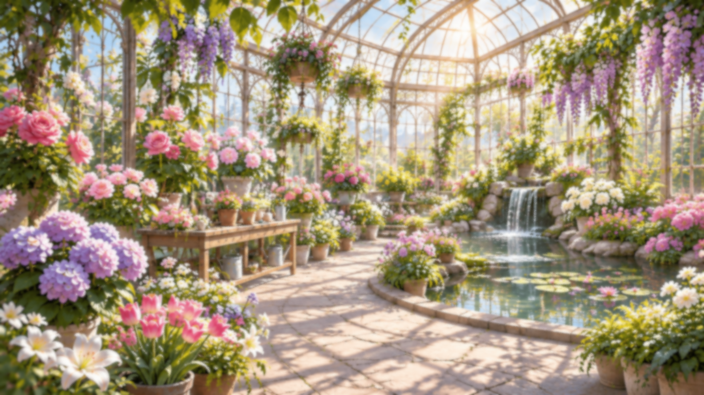
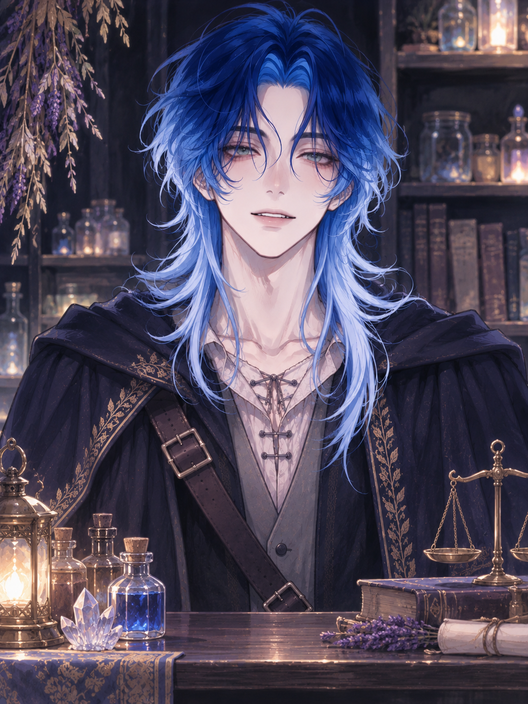
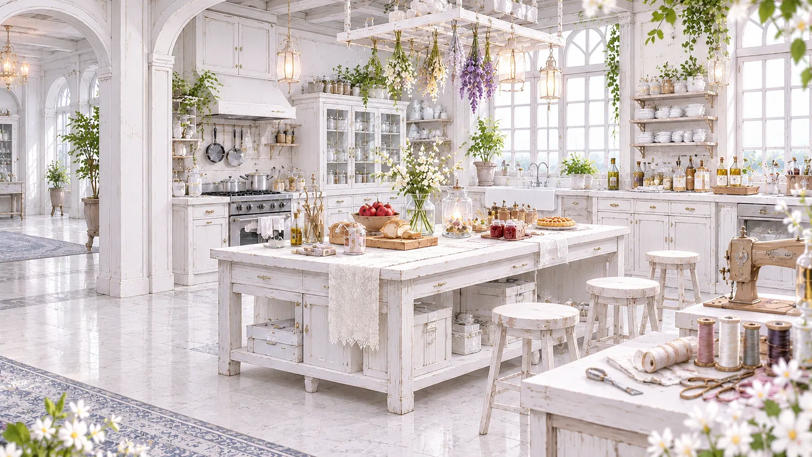
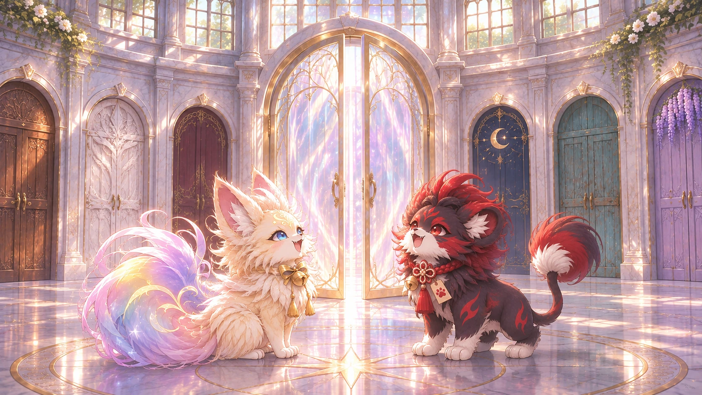
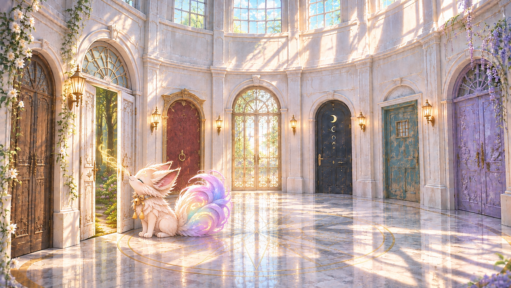
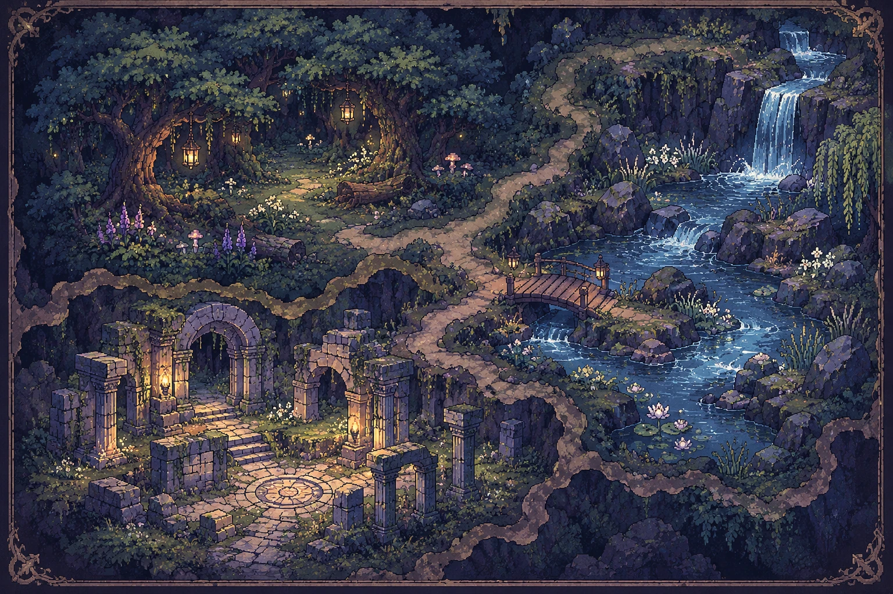
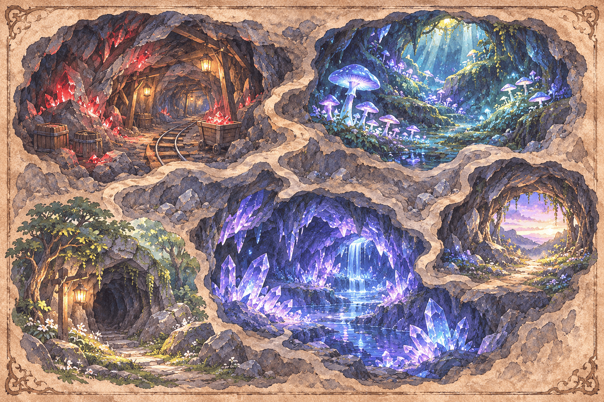
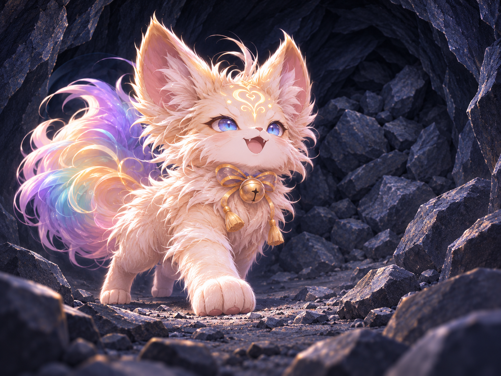

WELCOME TO THE OTHER SIDE扉の向こうには、
扉の向こうには、
不思議な日常がある。
神狩荘の塀の内側に現れた、見知らぬ扉。
その先には、明るい大理石のホールが広がっていた。
✧ 住人たちの物語 ✧
✉
IMPORTANT復旧コードを保存してね
このコードは今回だけ表示されます。端末やブラウザを変更したとき、住人データを復旧するために必要です。
THE HALL OF DOORS
塀の扉の向こう側
静かな大理石のホール。いくつもの扉のうち、開くのはまだほんの一部。
ここにいる住人たち
居場所は、住人全員で共有されています。
不思議な扉
扉の向こうには、新しい探索が待っている。
THE GREENHOUSE
温室
紫色の扉の先には、花を育てるための場所が用意されていた。

THE MOONLIT MERCHANT
月の扉の商人

商人
♡♡♡♡♡♡♡♡♡♡
あなたとの関係：お客様
店の様子を確認しています……
共同クエスト｜逆さに咲く花
全住人で1,000個集めると、商人から報酬を受け取れます。
商人からの贈り物
「……ありがとう。場所は用意したから、あとはがんばれ。」
物々交換
自由に話しかける (0/5回)
自由会話は♡5で解放されます。
THE WORKSHOP
工房

CLOTHING
服飾
必要な素材を揃えて服を作りましょう。完成するまで衣装の姿は秘密です。
THE KITCHEN

料理を作る
重い正面の扉が、ことりと開いた。奥には、よく磨かれた調理台と、誰かが並べた古い料理帳。料理帳には、まだ余白がたくさん残されている。
レシピ
レシピは料理や探索・獣たちとの交流、住人への贈り物で解放されます。調理回数に1日の制限はありません。
残り3往復0 / 3回タップ
ボタンを長押しし、水色の範囲で指を離そう。
0水色の範囲で成功MAX
宝物・宝石💎・コイン🪙のどれかを3枚集めて。
調理を保存しています……
料理が完成した！
完成した料理は持ち物に入りました。
THE RECIPE
レシピ詳細
THE DOOR OF CREATION
正面の扉の向こう側

A MEMORY BY THE SEA
THE GREEN DOOR · SEA
海の探索
エサを選ぶ
釣りに挑戦中
※色のついている所にタイミングを合わせてタップ！
A MEMORY IN THE HALL
白い扉の向こう側

「……ん？」 黄色い獣が、ふと白い扉の方へ顔を向けた。 鼻をひくひくと動かしながら、扉の前まで駆け寄っていく。 「いいニオイするぅ……！」 今まで何をしても開くことのなかった扉から、微かに風が吹き込んでいる。 黄色い獣が前足で扉に触れると、小さな音を立てて扉が開いた。
白い扉が解放されました。
MEMORIES
思い出を読み返す
第1の扉 ― 洞窟
第2の扉 ― 森
第3の扉 ― 海
THE FOREST
森の探索
採取場所
THE FOREST
森
白い扉の向こうに広がる森。好きな区画へ進んで探索できます。

THE FIRST CAVE

洞窟探索

採取する場所
現在の開拓
納品は全住人で共有されます。納品済みの素材は返却されません。
洞窟で暮らす黄色い獣
思い出を読み返す
A MEMORY IN THE CAVE



黄色い獣
THE FIELD GUIDE
図鑑
MY BELONGINGS
自分の持ち物
赤色の獣
現在の様子
自分を釣り上げてくれたあなたのことを覚えている。
赤色の獣の生活
休息・睡眠の状態の変化は住人全員で共有されます。
赤色の獣からのお願い
住人ごとのお願いです。素材を集めたら本人に報告しよう。
日記
赤色の獣が毎日の出来事を書き残しています。
受けとったプレゼント
お願いのお礼は完成すると通信箱に届くよ。
詳細を見る
この子について
性格
趣味・特技
ホールを探検したり、不思議なものを調べたりするのが好き。少し怖がりだけれど好奇心旺盛。
あなたとの関係
思い出
MEMORIES
赤色の獣との会話履歴
自由会話の履歴（最新20件）
選択式の履歴（最新20件）
MEAL & SNACK TIME
ごはん・おやつをあげる
赤色の獣
THE RED BEAST'S REQUESTS
赤色の獣からのお願い
同時に3件まで。素材は少しずつ預けられます。途中で断れば、預けた素材はすべて返却されるよ。
引き受けたお願い
今日のお願いは受注上限に達しました。また明日見にきてね。
今日のお願い
終わったお願いの履歴
WORDS WE LEARN TOGETHER
赤色の獣の言葉帳
みんなで教えた言葉を、赤色の獣が少しずつおぼえます。
WORDS WE LEARN TOGETHER
赤色の獣の言葉帳
おぼえた言葉
THE LITTLE BEAST'S DIARY
赤色の獣の日記
日記カレンダー
まだ日記はありません。夜に日記を書くよ。
SHARED MEMORIES
獣たちの交流
GIFTS FROM PYORO
贈り物
準備中の贈り物は完成まで保管されます。受取期限はありません。
贈り物
もらった記念品
受け取り履歴（最新5件）
A MOMENT WITH THE RED BEAST

赤色の獣とのお話
赤色の獣
「……なんだ？ オレに話があるのか？」
自由に話しかける（確認中）
毎日0時に回復します。
名前・呼び名を教える
黄色い獣
現在の様子
黄色い獣の生活
休息・睡眠の状態の変化は住人全員で共有されます。
黄色い獣からのお願い
住人ごとのお願いです。素材を集めたら本人に報告しよう。
日記
黄色い獣が毎日の出来事を書き残しています。
受けとったプレゼント
お願いのお礼は完成すると通信箱に届くよ。
詳細を見る
この子について
性格
趣味・特技
食べることが大好き。料理はまだ練習中。
あなたとの関係
思い出
A MOMENT WITH THE YELLOW BEAST

黄色い獣とのお話
黄色い獣
「ねえねえ！ なにかお話する？」
自由に話しかける（確認中）
毎日0時に回復します。
名前・呼び名を教える
THE LITTLE BEAST'S DIARY
黄色い獣の日記
日記カレンダー
まだ日記はありません。夜に日記を書くよ。
ボクのにっき
THE YELLOW BEAST'S REQUESTS
黄色い獣からのお願い
同時に3件まで。素材は少しずつ預けられます。途中で断れば、預けた素材はすべて返却されるよ。
引き受けたお願い
今日のお願いは受注上限に達しました。また明日見にきてね。
今日のお願い・常設のお願い
終わったお願いの履歴
YOUR MAILBOX
通信箱
準備中の贈り物は完成まで保管されます。受取期限はありません。
贈り物
もらった記念品
受け取り履歴（最新5件）
住人からの贈り物
受け取るまでは贈り主の素材をお預かりします。
住人へ贈る
送信中の贈り物
送った贈り物・取引履歴（最新5件）
住人からの受け取り履歴（最新5件）
MAILBOX ARCHIVE
履歴一覧
履歴を読み込み中…
Zzz
⌂
THE YELLOW BEAST'S ROOM黄色い獣の部屋
小さな部屋には、ふかふかの寝床や、黄色い獣のお気に入りのものが置かれている。
MEAL & SNACK TIME
ごはん・おやつをあげる
お腹のようすを確認中
WORDS WE LEARN TOGETHER
黄色い獣の言葉帳
みんなで教えた言葉を、黄色い獣が少しずつおぼえます。
WORDS WE LEARN TOGETHER
黄色い獣の言葉帳
おぼえた言葉
51〜100件目を見る
みんなで教えた履歴
51〜100件目を見る
MEMORIES
黄色い獣との会話履歴
自由会話の履歴（最新20件）
21件目以降の履歴を見る
選択式の履歴（最新20件）
STAFF ONLY
管理者ログイン
住人登録とは別の管理者アカウントでログインします。
初回の管理者登録（製作者・初期設定担当者のみ）
Cloudflare Workersの Secret に ADMIN_SETUP_SECRET を設定した後、2名それぞれのアカウントを作成します。登録後はSecretを削除してください。
DIALOGUE EDITOR
NPC会話エディター
管理者： ／ 現在のNPC：黄色い獣
対象NPCのデータだけを編集します。住人データの初期化は行いません。
住人の復旧コード再発行
選択した住人の復旧コードを新しくします。住人情報・持ち物・親密度・図鑑・思い出は変更されません。
以前の復旧コードは無効になります。ログイン中の住人はログアウトされません。新しいコードは今回だけ表示されます。
新しい復旧コード：
このコードを本人へ安全に伝えてください。再表示はできません。
管理者の編集履歴（直近100件）
服飾エディター
レシピ登録・公開期間・必要素材・ミニゲーム工程を管理します。登録だけでは作成できません。
編集履歴（最新30件）
海の難易度・発見イベント
設定の保存は次に開始する釣りから反映。進行中の釣りと住人の記録は変更しません。
赤色の獣の発見イベント
有効にした後、共同ゲージを満たした最初の有効タップで発見者が一度だけ確定します。既存のゲージ進捗・住人データはリセットしません。
管理者ダッシュボード
総合分析
管理者専用・現在のテスト期間の記録。自動更新なし。
住人活動・NPC交流分析
共同クエストエディター
未開始・進行中のクエストを編集できます。納品済みの素材は除外できず、必要数は納品数以上に設定してください。達成済みは読み取り専用です。
編集履歴
次回初期化用の設定です。保存しても現在の納品実績・救出状態は変更されません。
現在の納品状況（変更されません）
編集履歴
素材エディター
通常・宝箱は重み（0〜100）、★5は各素材の独立した出現率（%）。0でその経路の出現を停止。素材を追加・除外し、保存すると次の採取から反映します。宝箱は解放済み区画の素材のみ抽選します。
編集履歴
管理者の編集履歴（直近100件）
お願い編集履歴（直近100件）
AI人格エディター
対象NPC
保存済み人格のテスト
架空の状態でテストします。共有言葉帳・個別履歴は使用せず、全体のAI利用枠を消費します。